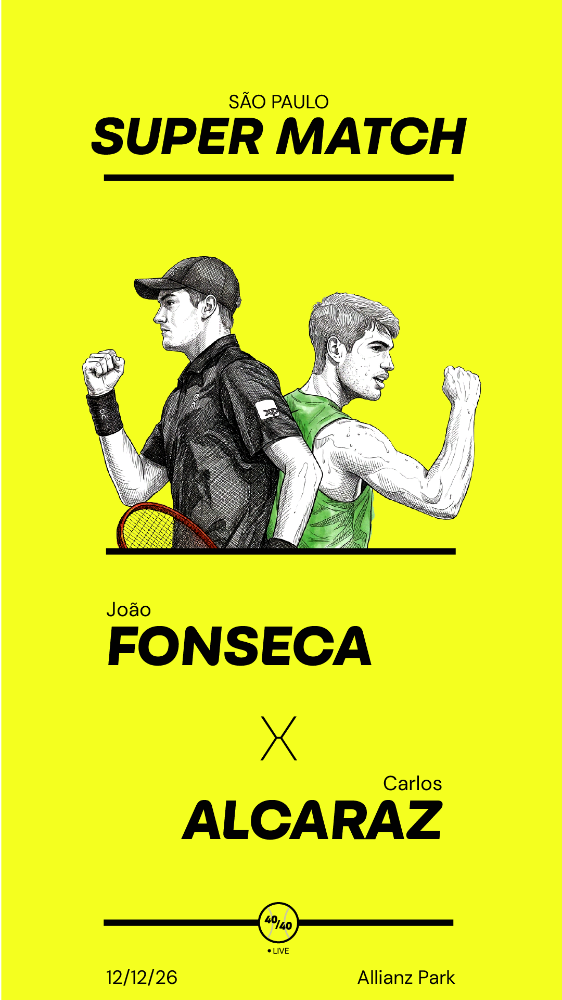
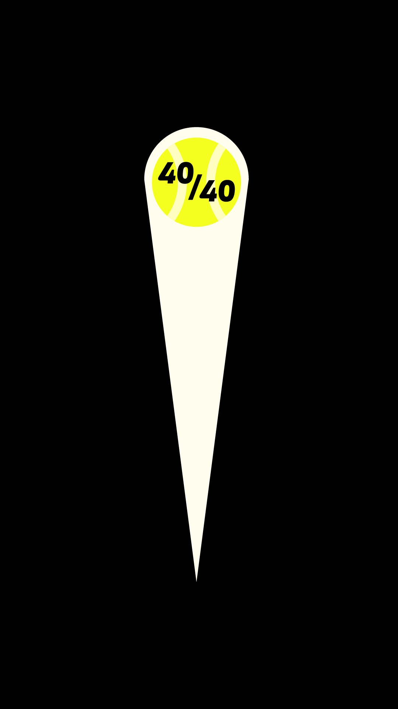
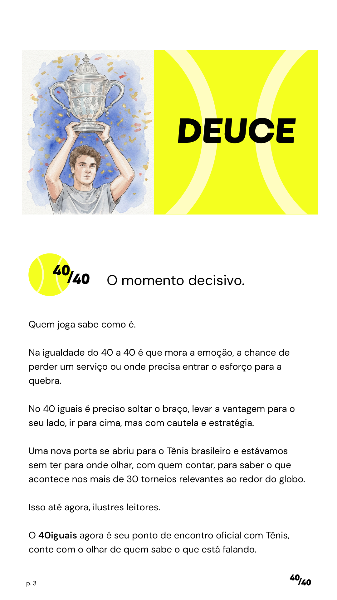
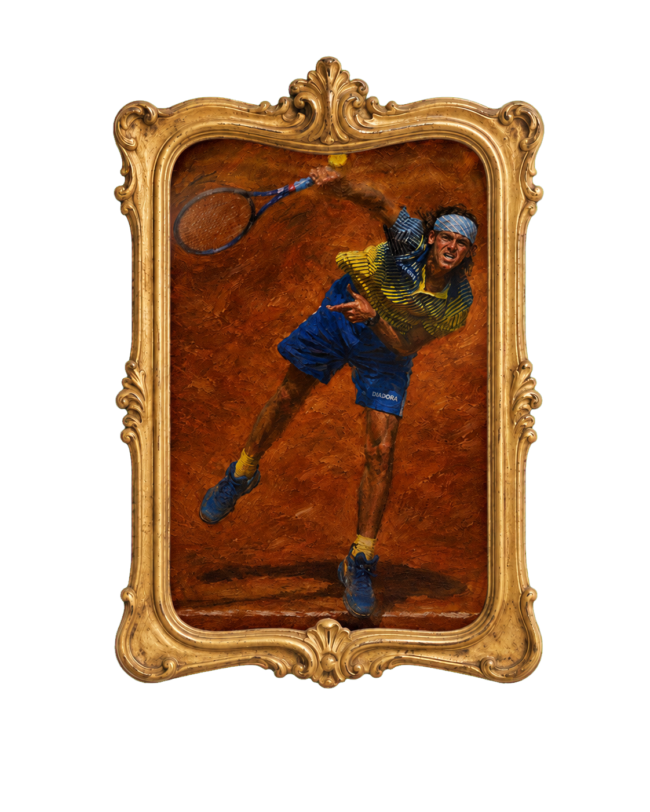
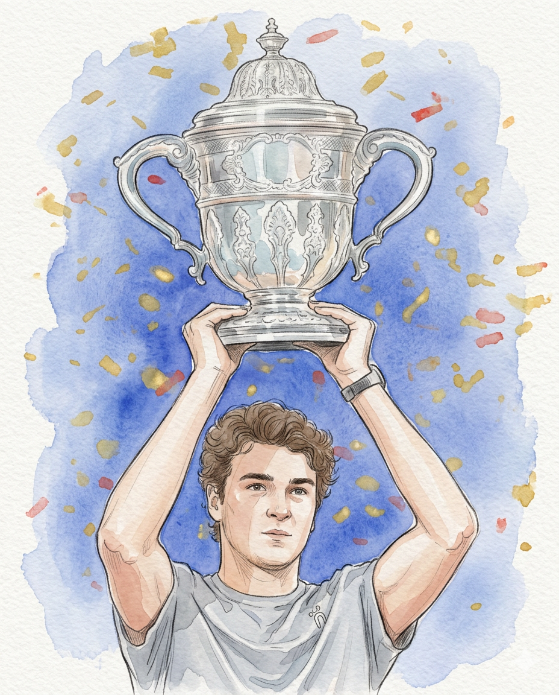

01 / pré-jogo
01 / pré-jogo40—40
vantagem
O momento decisivo.
role para entrar em quadra ↓
BRASIL 40
RESTO DO MUNDO 40
01 manifesto
Deuce
É na igualdade que mora a emoção.
Quem joga sabe como é.
Na igualdade do 40 a 40 é que mora a emoção, a chance de perder um serviço ou onde precisa entrar o esforço para a quebra.
No 40 iguais é preciso soltar o braço, levar a vantagem para o seu lado, ir para cima, mas com cautela e estratégia.
Uma nova porta se abriu para o tênis brasileiro. O 40iguais é seu ponto de encontro com o esporte, com o olhar de quem sabe o que está falando.
02 identidade
Jogo, tensão
e movimento.
Uma linguagem visual construída no ponto de equilíbrio entre o rigor editorial e a energia imprevisível da quadra.
CARBONA · CARBONA · CARBONA · CARBONA ·
03 sistema editorial
Da primeira
bola ao match point.
Uma marca que se adapta ao ritmo da notícia sem perder a personalidade.
01 / pré-jogo
02 / análise
03 / repertório
04 / identidade04 legado
Ídolos atravessam gerações.
O poder de
um ídolo.
Antes de uma nova geração fazer o Brasil sonhar com o tênis, Guga mostrou até onde era possível chegar. Com talento, leveza e espírito esportivo, transformou conquistas individuais em um legado coletivo e abriu caminho para tudo o que vemos hoje. Valeu, Guga.

determinaçãolevezaespírito esportivo
05 match point
